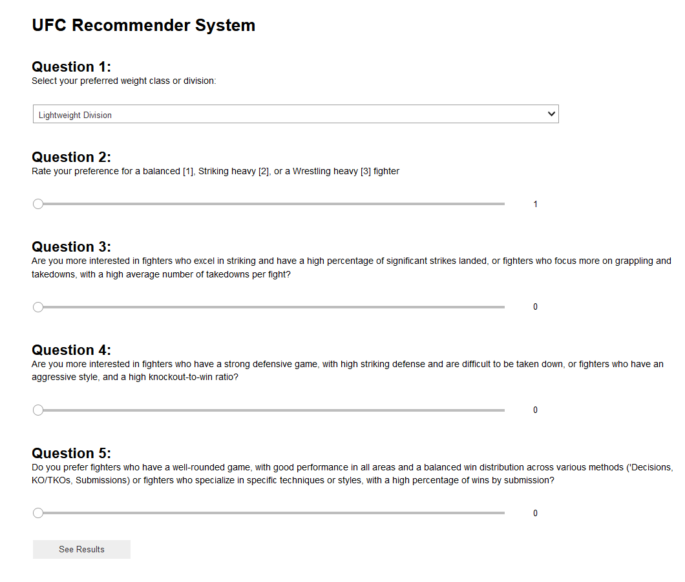

Introduction
The hope with this UFC Recommender System is to provide some introduction to the sport of MMA, and also introduce you to some of the most iconic fighters in UFC history.
Using a blend of data analysis and user preferences, this system offers personalized fighter recommendations. Whether you're drawn to fierce striking confrontations or intricate ground game tactics, this model will help tease it out for you.
Answer a few questions posed by the model and based on your input, it will sift through a vast roster of UFC fighters (both active and retired) and compile a top 5 list of fighters you should explore further.
The accuracy of the model for each of the C values was calculated by dividing the sum of the total number of correctly classified values by the model over the total number of correctly classified observations.
Data Collection
This model's data foundation comes from this source: UFC Data on Kaggle.
Data Cleaning
The dataset used for recommendations underwent the following stages of refinement:
The original dataset documented stats per fight for each fighter, presented in chronological order from UFC's inception through 2021. To focus on recommending fighters (not individual fights), we compiled cumulative stats for each fighter.
The dataset's primary identifier was fighter_name, but it originally featured R_fighter_name and B_fighter_name as main and auxiliary keys. Given multiple entries for the same fighter (reflecting multiple bouts), we aggregated fight data under each fighter's name for both R_fighter_name and B_fighter_name.
After establishing the primary key, we aggregated stats per fight for each fighter using functions like average(), count(), and max(). This helped present a consolidated record for each fighter with precise stats.
Fighter classification by style was achieved by following this insightful article:Visualizing Fighter Styles.
Subsequently, we performed data analysis and PCA to construct the recommendation model.
Formulating the Recommender Model
In short, this model leverages cosine similarity, comparing user responses with the dataset's fighter statistics. Here's a deeper dive into the process:
Users answer five questions.
The first two queries hone in on user preferences regarding fighting styles and weight classes, enabling the model to curate a narrowed dataset featuring aligned fighters.
The subsequent three questions are derived from PCA analysis: Question 3 corresponds to PC1, Question 4 to PC2, and Question 5 to PC3. Each principal component (PC) has a loading score that offers insight into feature contribution. User responses (ranging between 0 and 10) adjust these loading scores. Desired features get multiplied, while less-preferred features get divided by the user's input. This process is applied to questions 3 to 5.
The modified loading scores merge into a singular vector. The closer a fighter's stats align with this combined vector, the higher their cosine similarity score.
Fighters are then ranked based on these scores, and the top contenders emerge as recommendations.
This methodology emphasizes the importance of user preferences, ensuring that recommendations resonate with individual tastes. While PCA uncovers user preference structures, cosine similarity pinpoints fighters with stats harmonizing with the user's adjusted preference vector.
Additionally, future model iterations may integrate metrics like popularity, recent achievements, user feedback, and other relevant contexts, amplifying the recommendation's accuracy.
Next Steps
This model serves as our initial successful prototype. Moving forward, we aim to integrate more features, such as fighter popularity, top-viewed bouts, social media influence, and recent accolades. These additions will render our recommendation system even more holistic and adaptive.